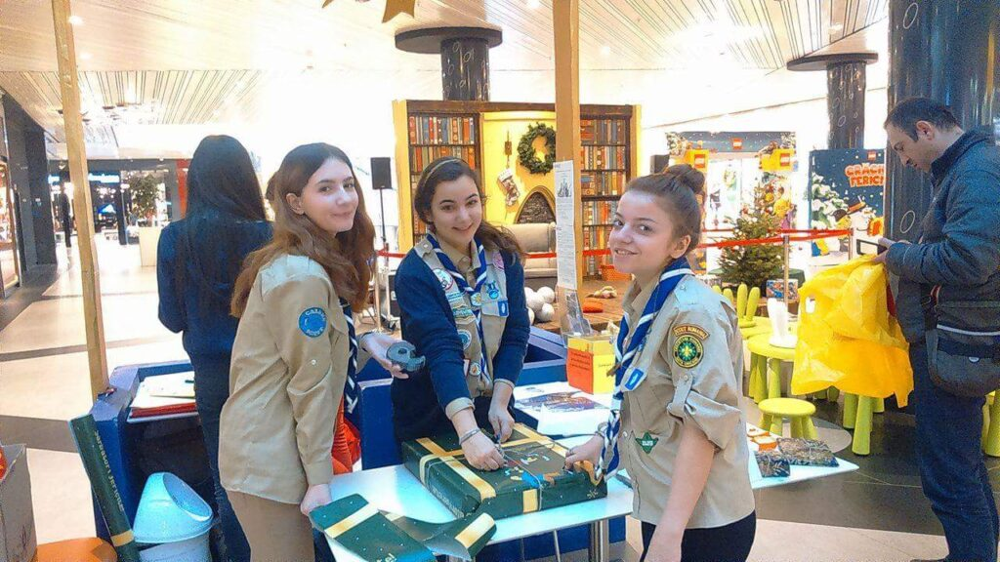

🎁 OCF • 2015
SCOUTMADE – Ordinul Cadoului Fermecat în varianta Cabana Scout

Zile de ateliere cu tehnici de împachetat, apoi lumânări parfumate hand-made: inimioare, trandafiri, coji de portocală. Proiect organizat de temerari, exploratori și seniori, cu sprijinul liderilor.
„M-a ajutat să-mi las firea introvertită deoparte. Am atins toate ariile: fizic, creativ, afectiv, social și spiritual." — Valentina
„Am contribuit la bucuria celor care oferă cadouri și am promovat cercetășia în comunitate." — Daiana
„Am strâns fonduri și înscrieri. Munca ne-a fost răsplătită pe măsură." — Mădălina